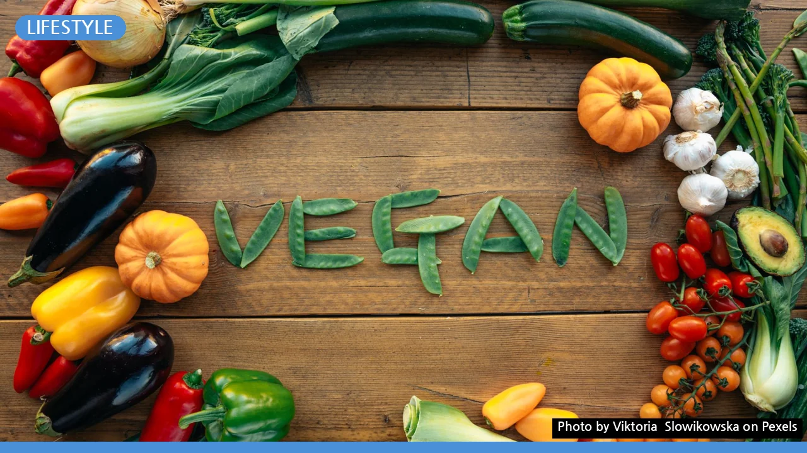
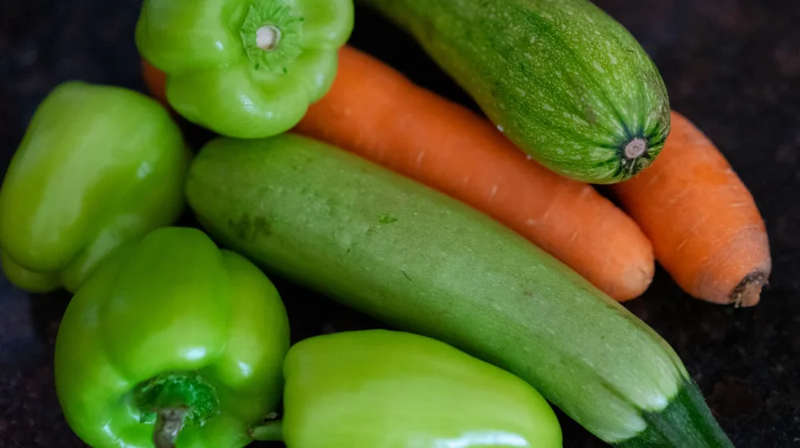

비건 식단 시작, 이것부터 확인하세요: 초보자를 위한 단계별 가이드
사진: Viktoria Slowikowska / Pexels (무료 이미지, 출처 표기)
비건 식단, 왜 시작하려 하시나요?

비건 식단은 단순히 특정 음식을 먹지 않는 것을 넘어, 동물성 제품을 배제하는 생활 방식을 의미합니다. 많은 분들이 건강 개선, 환경 보호, 동물 윤리 등 다양한 이유로 비건 식단을 시작합니다. 어떤 동기이든, 비건 식단은 올바른 정보와 준비가 동반될 때 더욱 성공적이고 지속 가능합니다.
처음부터 완벽하게 모든 것을 바꿀 필요는 없습니다. 이 가이드를 통해 비건 식단을 시작하고 정착하는 데 필요한 실질적인 정보를 얻으실 수 있습니다. 막연하게 느껴졌던 비건 식단이 생각보다 쉽고 즐거운 여정이 될 수 있도록 함께 알아보겠습니다.
초보자를 위한 비건 식단 전환 방식: 점진적 vs. 즉각적
비건 식단으로 전환하는 방법은 크게 두 가지로 나눌 수 있습니다. 자신에게 맞는 방식을 선택하는 것이 중요합니다.
- 점진적 전환 (가장 권장): 서서히 동물성 제품을 줄여나가는 방식입니다. 예를 들어, '베지테리언'에서 '페스코 베지테리언', '락토 오보 베지테리언' 등을 거쳐 비건으로 나아가는 것입니다. 혹은 처음에는 일주일에 며칠만 비건식을 시도하거나, 한 끼 식사만 비건식으로 바꾸는 '플렉시테리언' 방식으로 시작할 수도 있습니다. 이 방법은 신체가 변화에 적응하고, 새로운 식재료와 레시피를 탐색할 시간을 줍니다.
- 즉각적 전환: 하루아침에 모든 동물성 제품을 끊는 방식입니다. 강력한 동기 부여가 있거나 빠른 변화를 원하는 경우 선택할 수 있습니다. 하지만 식단 변화에 대한 충분한 지식 없이 시도할 경우 영양 불균형이나 외식의 어려움 등으로 인해 빠르게 포기할 위험이 있습니다.
대부분의 전문가들은 점진적 전환을 권장하며, 개인의 생활 방식과 몸의 반응을 살피며 속도를 조절하는 것이 중요하다고 말합니다.
비건 식단 필수 영양소: 놓치지 말아야 할 5가지
비건 식단은 균형 잡힌다면 충분히 건강하지만, 일부 영양소는 특별히 신경 써야 합니다. 다음 5가지 영양소는 특히 주의 깊게 섭취해야 합니다.
- 비타민 B12: 식물성 식품에서는 거의 발견되지 않으므로, 보충제 섭취가 필수적입니다. 비타민 B12는 신경 기능과 적혈구 생성에 중요한 역할을 합니다.
- 오메가-3 지방산: 아마씨, 치아씨, 호두, 해조류 등에 풍부하지만, DHA와 EPA 형태는 보충제를 통해 얻는 것이 효율적일 수 있습니다. 뇌 건강과 염증 조절에 기여합니다.
- 칼슘: 케일, 브로콜리, 두유, 아몬드, 두부 등 식물성 식품에도 많습니다. 비건 식단에서 칼슘은 부족하기 쉽다는 오해가 있으나, 다양한 식물성 급원으로부터 충분히 섭취 가능합니다.
- 비타민 D: 햇볕을 통해 합성되지만, 실내 활동이 많다면 비건 비타민 D 보충제(D2 또는 비건 D3)를 고려할 수 있습니다. 뼈 건강과 면역력에 필수적입니다.
- 철분: 콩류, 시금치, 렌틸콩, 통곡물 등에 풍부합니다. 식물성 철분은 흡수율이 낮으므로, 비타민 C가 풍부한 식품(오렌지, 피망 등)과 함께 섭취하면 흡수율을 높일 수 있습니다.
2026년 08월 기준, 다양한 비건 영양제들이 시장에 출시되어 있으며, 필요한 경우 전문가와 상담 후 선택하는 것이 좋습니다.
성공적인 비건 식단을 위한 장보기와 주방 준비
비건 식단을 시작하기 전, 장보기 리스트를 정리하고 주방을 비건 친화적으로 만드는 것이 중요합니다. 다음은 도움이 될 만한 팁입니다.
- 식물성 기본 식재료 채우기: 쌀, 파스타, 렌틸콩, 병아리콩 등 곡물 및 콩류를 비축하고, 두부, 템페, 견과류, 씨앗류를 구비해 단백질원을 확보하세요. 신선한 채소와 과일은 물론 필수입니다.
- 비건 대체 식품 활용: 아몬드유, 두유, 귀리유 등 식물성 우유, 비건 마가린, 비건 치즈, 비건 마요네즈 등 대체 식품을 활용하면 비건 식단이 더욱 즐거워집니다.
- 가공식품 성분표 확인 습관화: 육류, 유제품, 계란 외에도 젤라틴, 카제인, 유청, 라놀린 등 동물성 성분이 포함될 수 있습니다. 성분표를 꼼꼼히 확인하는 습관을 들이세요.
- 주방 도구 점검: 믹서, 푸드 프로세서 등 요리 시간을 단축해주는 도구가 있다면 편리합니다. 식물성 재료를 활용한 다양한 레시피를 시도해보세요.
초반에는 익숙하지 않은 식재료가 많을 수 있으므로, 소량씩 구매하여 맛보고 활용법을 익히는 것을 추천합니다.
매일 식단 구성하기: 식재료와 레시피 활용 팁
비건 식단은 단조롭다는 편견이 있지만, 사실 매우 다채롭고 맛있게 구성할 수 있습니다. 균형 잡힌 식단을 위해 다음을 참고하세요.
- 다양한 채소와 과일 섭취: 매끼 식사에 여러 색깔의 채소를 포함하여 비타민, 미네랄, 섬유질을 풍부하게 섭취하세요.
- 단백질원 확보: 콩류(두부, 렌틸콩, 병아리콩), 견과류, 씨앗류, 곡물(퀴노아, 귀리) 등을 통해 충분한 단백질을 섭취합니다. 매 끼니 단백질원을 포함하는 것이 좋습니다.
- 건강한 지방 섭취: 아보카도, 견과류, 씨앗류, 올리브 오일 등에서 불포화 지방산을 충분히 섭취하세요.
- 레시피 활용: 온라인에는 수많은 비건 레시피가 있습니다. 비건 요리 블로그, 유튜브 채널, 앱 등을 활용하여 새로운 요리에 도전해보세요. 특히 콩고기, 버섯, 가지 등을 활용한 요리는 육류의 질감을 대체하기 좋습니다.
- 외식 시 고려사항: 비건 식당을 미리 찾아두거나, 일반 식당에서는 채소 위주의 메뉴를 선택하고 동물성 재료(치즈, 계란 등)를 빼달라고 요청하는 것이 좋습니다.
아래는 비건 식단 초보자를 위한 한 끼 식사의 예시입니다 (2026년 08월 기준).
비건 식단 유지의 어려움, 이렇게 극복하세요
비건 식단을 유지하다 보면 예상치 못한 어려움에 부딪힐 수 있습니다. 다음은 흔히 겪는 문제와 그 해결책입니다.
- 영양 불균형 우려: 앞서 언급한 필수 영양소(비타민 B12, 오메가-3, 철분 등)에 대해 학습하고, 보충제를 활용하며, 다양한 식재료를 골고루 섭취하여 예방합니다. 정기적인 건강 검진으로 영양 상태를 확인하는 것도 좋은 방법입니다.
- 사회생활의 어려움: 친구, 가족과의 식사 자리에서 난감할 수 있습니다. 미리 본인의 식단을 알리고 이해를 구하거나, 직접 비건 메뉴를 제안하는 등 적극적인 소통이 필요합니다. 도시락을 준비해 가는 것도 방법입니다.
- 단조로움과 음식 선택의 폭 제한: 다양한 비건 레시피를 탐색하고, 새로운 식재료를 시도하며 요리에 재미를 붙여보세요. 지역 비건 커뮤니티나 온라인 그룹에 참여하여 정보를 공유하고 새로운 아이디어를 얻는 것도 좋습니다.
- 금전적 부담: 비건 대체식품이 일반 식품보다 비싼 경우가 있습니다. 가공식품보다는 통곡물, 콩류, 제철 채소 등 기본 식재료 위주로 식단을 구성하면 비용을 절감할 수 있습니다. 직접 요리하는 습관도 중요합니다.
비건 식단은 개인의 의지와 노력이 중요하지만, 혼자 감당하기보다 주변의 도움을 받거나 정보를 교환하며 꾸준히 나아가는 것이 성공의 열쇠입니다.
🔗 이 글도 함께 보면 좋아요: 커피 로스팅 단계별 맛 차이: 내 취향 원두 찾는 완벽 가이드
관련 추천 상품
비건 식품, 식물성 단백질, 비건 요리책 관련 인기 상품 보러가기
이 포스팅은 쿠팡 파트너스 활동의 일환으로, 이에 따른 일정액의 수수료를 제공받습니다.